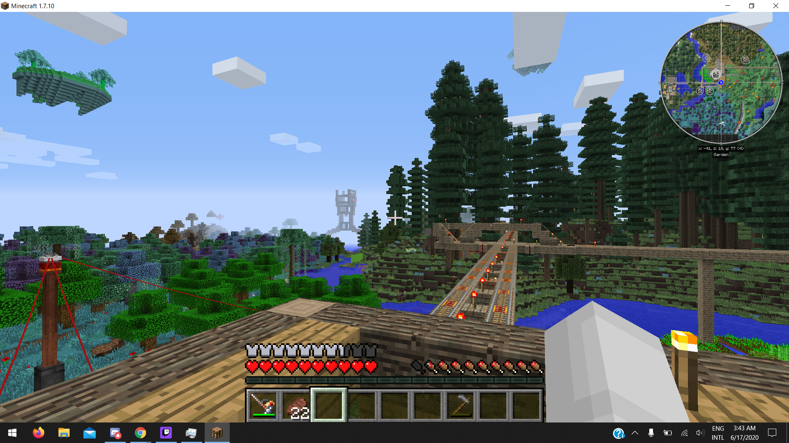
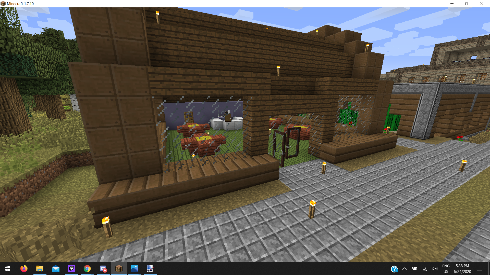

<html>
<head>
	<title>History of the Town</title>
	<meta charset="UTF-8">	
	<link rel="stylesheet" href="./style.css" />	
</head>
</html>

<body>

<div class="maindiv" id="maindiv">
	<script src="./main.js"></script>
	
	<div class="bodydiv">
		<h1>History of the Town</h1>
		Unlike many of our other worlds, the iconic FTB Infinity Evolved world has never had written history or laws. 
		
		<h2>Wood Period</h2>
		
		<b>2020 June 17 3:43AM</b><br>
		Deastl's tower (under construction) looms ominously in the distance. The minimap tells us what was built in the city at this time. The only buildings in the city were my house, Rails Incoropolated[sic] + Red Alloy Solutions, and the old ore processing building.<br>In Deastl Town, the train station was already built, along with train lines to my house and out east. The line to Megan's house was not yet built.
		<br><br>
		
		<b>2020 June 17 3:48AM</b><br>
		The first photo of the national landmark "Self Portrait of a Creeper". But the crater is older than this; it appears on the minimap in the previous photo too. The granary is not built yet. A disturbingly crowded cattle pasture obstructs Main Street (I completely forgot about this)
		<br><br>
		
		<b>2020 June 18 1:07AM</b><br>
		Experimental rail intersections. The minimap shows several buildings built on this day. The newly built granary is probably already running automatically, as the wheat farm behind it has a distinct color. The smeltery building is also newly built.
		<br><br>
		
		<b>2020 June 18 10:11PM</b><br>
		The cactus farm is newly built on this day. The railroad control building is under construction. A new rail line has been built; I think this is an older version of the route to Megan's house.
		<br><br>
		
		<b>2020 June 19 1:24AM</b><br>
		The first photo of the Squenis Monument. The second Squenis monument up in the trees was not yet built.
		<br><br>
		
		<b>2020 June 19 4:15AM</b><br>
		Inside the circuitry of the unfinished railroad control building. This circuitry has since been gutted.
		<br><br>
		
		<h2>Soviet Squenis Republic/Wartime Period</h2>
		
		
		<b>2020 June 20 3:39AM</b><br>
		Two southern rail lines that will later be removed. The tree farm is now built. The roof on the railroad control building is now finished.
		<br><br>
		
		<b>2020 June 20 5:36AM</b><br>
		Map of the world around the time of the War. Prior to the war there was hardly any impetus to differentiate the nations. Nations outside of the Squenis Republic are deliberately scaled down to make them appear insignificant. This map is highly inaccurate overall. Instead of genuine geographic surveying, it served a political and propagandic purpose.
		<br><br>
		
		<h2>Postwar Period</h2>
		
		
		<b>2020 June 24 5:19PM</b><br>
		Both inns are now built. The Kommie Krab is recently finished. The Squenis Monument was replaced with diamonds at some point. Looking at the right of the photo, we can presume that the railroad to Megan's house has its finished route.
		<br><br>
		
		<b>2020 June 24 5:38PM</b><br>
		Close up of the Kommie Krab when it was the northernmost building.
		<br><br>
		
		<b>2020 June 28 10:25PM</b><br>
		The Kmazon building has been built; at this time it is unnamed. The Squenis Monument has returned to stone and now has its diamond chest. The tech store is under construction (I'm standing on the unfinished wall taking this photo).
		<br><br>
		
		<b>2020 June 29 1:19AM</b><br>
		In the minimap, the dirt Squenis Monument can be seen for the first time in the fir forest.
		<br><br>
		
		<b>2020 July 3 12:31AM</b><br>
		The Draconic power sphere is now built, along with several other processing buildings in the industrial neighborhood.
		<br><br>
		
		<b>2020 July 3 3:25AM</b><br>
		The second Squenis Monument up in the trees is fully visible. The tech store is finished for now, but will be upgraded and start running fully post-hiatus.
		<br><br>
		
		<b>2020 July 3 3:33AM</b><br>
		The Kmazon building receives its name. The flower farm and the underground train stop are now visible.
		<br><br>
		
		<h2>Walmarx Period</h2>
		
		
		<b>2020 July 4 5:48PM</b><br>
		The Walmarx is under construction, barely visible at the top of the map.
	</div>
		<a href="../index.html">👈 back </a>
</div>

</body>